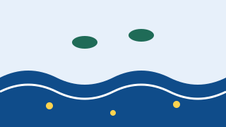

Final report
We isolated three strains that reduce polyethylene microplastics by 12% in 30 days. The results are in a paper under review. Spending: €19,200 (11,200 raised plus 8,000 from the University).
Searching the river Po for bacteria that break down microplastics, and learning how to use them in water treatment.
PlastiBio group · Department of Molecular Biotechnology and Health Sciences, University of Turin
Principal investigator: Federico Ghione

Microplastics are everywhere, even in Piedmont's rivers. Some bacteria can use them as food, but they are still little known.
The PlastiBio group collected samples along the river Po, isolated the most promising bacteria and tested them in small bioreactors.
| Budget item | Amount |
|---|---|
| Bacterial DNA sequencing | €3,000 |
| Lab bioreactors | €2,500 |
| Microplastics analysis | €1,800 |
| Summer grant for a student | €700 |
| Total (goal) | €8,000 |
If the second goal is reached, the extra money will be used to extend sampling to Lake Viverone.
The campaign is closed: rewards can no longer be chosen. Below you can see how many people chose each one.
We isolated three strains that reduce polyethylene microplastics by 12% in 30 days. The results are in a paper under review. Spending: €19,200 (11,200 raised plus 8,000 from the University).
With donations above €8,000 we will also sample Lake Viverone.
Comments are published in the language they were written in.
Ilaria V. · · Comment in Italian
Si potranno usare anche negli impianti piccoli dei paesi?
Some of the supporters who chose to show their name:
Chiara N., Giorgio E., Luisa C., Davide S., Valentina R., Stefano M., Laura M., Nicola P. and 243 more people, some anonymous.